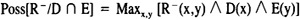

by Abraham Kandel
CRC Press, CRC Press LLC
ISBN: 084934297x Pub Date: 11/01/91
|
|
Fuzzy Expert Systems
by Abraham Kandel CRC Press, CRC Press LLC ISBN: 084934297x Pub Date: 11/01/91 |
| Previous | Table of Contents | Next |
It should be noted that the spirit of the theory of approximate reasoning is very much like that of mathematical programming.
Assume V is a variable which takes its value in X. Let A and B be two normal subsets of X. If A ⊂ B, then the statement V is A is more informative than the statement V is B. This can be easily seen in the situation in which:
A = {x1, x2, x3}
B = {x1, x2, x3, x4, x5}
In the first case we know that V is one of three elements, while in the second it is one of five.
Yager3 has discussed a measure of specificity to indicate how much information is contained in a set. In particular,
where
Assume V, W, and U are three variables taking their values in the sets X, Y, and Z, respectively. Consider the rule:
If V is W then U is B
where we shall assume the base sets of V and W, X, and Y are the same.
In trying to represent this rule in a form amenable to application of the theory of approximate reasoning, the crucial issue becomes that of representing the relational antecedent condition V is W. The approach we shall take to representing this type of nonfixed requirement on variables is to replace the condition V is W by a fixed joint canonical statement of the form:
(V, W) is R
where R is a subset on the set X × Y capturing the desired relationship between V and W. We shall call R the tolerance relationship.
As a first attempt to develop an R to capture the desired relationship we let R be defined as:
R(x,y) = 1 if x = y
R(x,y) = 0 if x ≠ y
Thus, our rule can be written as:
If (V,W) is R then U is B
This rule translates into a possibility distribution Π1 with respect to V,W,U over the set X × Y × Z so that:
If we have the additional knowledge that:
V is D and W is E
then we get two more constraining possibility distributions:
Π2(x) = D(x)
Π3(y) = E(y)
Conjuncting these three distributions we get the overall distribution
To get the inferred value of U, which we shall denote as F, we take the projection of Π onto Z, thus:

thus,
when D and E are assumed normal.
Thus,
What becomes evident in this formulation is that the condition of equality of the two sets D and E does not imply that F(z) = B(z).
Consider the simple case in which:
E = D = {x1,x2}
First, we note that:
and that R-(x,y) = 1 if x ≠ y. Since x1 ≠ x2 and D(x1) = 1 and E(x2) = 1, then:
thus F(z) = 1 for all z and we infer that U is unknown rather equal to B. At first this seems anti-intuitive, but a careful analysis makes it seem reasonable. The statement V is D indicates that V is either x1 or x2 but does not tell us which element it is. It just reduces the possible values of V to this smaller set. Similarly, W is E also just tells us that W is either X1 or X2. What is important to note is that E = D does not imply that the value of V equals the value of W, but rather that the values of these elements are drawn from the same set. This fact becomes more obvious when we have the data D = E = X; here we see that the values of V and W are completely unknown. It can be easily shown that with the requirement of normality on D and E and the current choice for R, the only situation in which we will infer F = B, perfectly fires the rule, is if:
D = E = {x}
where x is any element of X. That is, only if D and E are the same singleton will we get B as our inferred value for U. Alternatively, this condition is seen to be that E and D are equal and have the highest specificity.
It can also be easily shown that if there exist two distinct elements x1,x2 so that D(x1) = 1 and E(x2) = 1 then we shall always infer F = Z; that is, U is unknown.
The choice of R as our tolerance relation is a very restrictive choice. It is highly specific in that it only perfectly fires the rule if E and D are the same singleton sets. We can say that this R is an intolerant tolerance relationship. In many cases of relational antecedent conditions we may prefer a more relaxed requirement. For example, in a control problem, if V and W are two pressures, we may desire that the antecedent condition be satisfied if both variables are very close to each other in value. In order to capture these less restrictive conditions we are forced to redefine the tolerance relationship R which determines the satisfaction of the antecedent condition.
Let R be a relationship on X × X we can indicate for each pair x1, x2 ∈ X, R(x1,x2) ∈ [0,1] as the degree to which x1 and x2 can tolerate each other as being possible values for V and W, respectively. The only requirement we make on our selection of R is that there exists at least one pair (x1,x2) so that R(x1,x2) = 1; that is, we require that R be normal. The reason for this requirement is that unless this is made it will not be possible for the rule to ever fire completely. We note that the larger R(x1,x2), the more tolerant. The choice of membership of elements in R is a reflection of our desired relationship between V and W.
We recall that a rule:
If (V,W) is R then U is B
with the data:
V is D and W is E
results in an inferred value for U of F where:
in which:

| Previous | Table of Contents | Next |